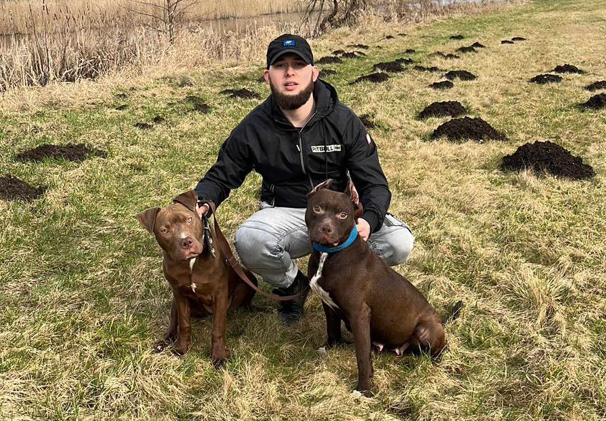
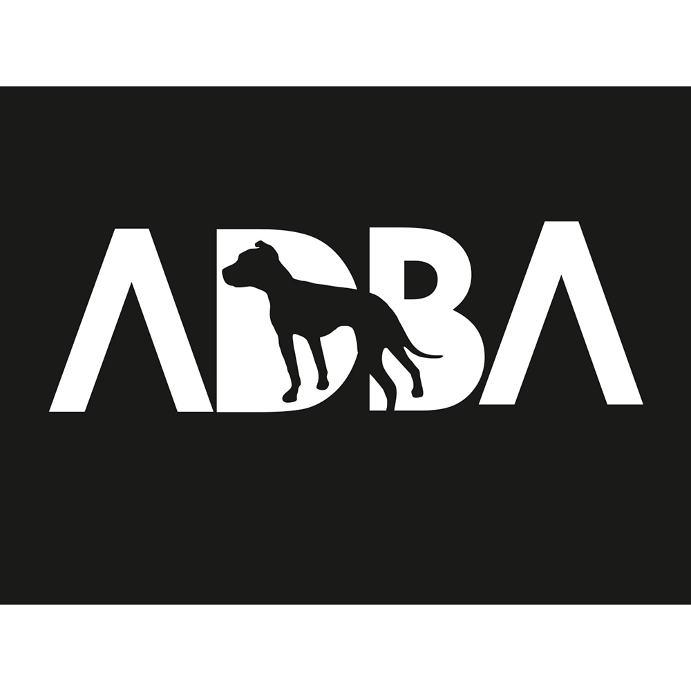

Witajcie w naszej hodowli Pitbull Red Nose!
Jesteśmy pasjonatami rasowych psów od wielu lat, a nasza miłość do tych wspaniałych zwierząt
skłoniła nas do założenia hodowli. Naszym celem jest podtrzymywanie doskonałej jakości,
zdrowia i temperamentu naszych psów, co sprawia, że są one doskonałymi towarzyszami zarówno
dla rodzin, jak i osób aktywnych.

W naszej hodowli stawiamy na:
Zdrowie i genetykę:
Każdy nasz pies przechodzi gruntowne testy zdrowotne, a nasze linie
hodowlane są starannie dobrane w celu zapewnienia jak najlepszych warunków genetycznych
dla naszych szczeniąt.
Temperament i socjalizację:
Nasze szczenięta są wychowywane w domowym środowisku, gdzie są stale
otoczone miłością, uwagą i codziennymi interakcjami z ludźmi oraz innymi zwierzętami. Dzięki temu
rozwijają doskonałe umiejętności społeczne i są gotowe na życie w nowym domu.
Wsparcie dla nowych właścicieli:
Nie kończy się dla nas w momencie sprzedaży szczeniaka. Jesteśmy
zawsze gotowi udzielić pomocy i wsparcia naszym klientom w każdej kwestii związanej z opieką nad
naszymi psami.
Jeśli masz pytania lub chciałbyś dowiedzieć się więcej o naszej hodowli i dostępnych szczeniętach,
skontaktuj się z nami. Jesteśmy tutaj, aby pomóc!
Razem z nami możesz mieć pewność, że otrzymujesz szczeniaka o doskonałym pochodzeniu, zdrowiu i charakterze.
Dziękujemy za odwiedzenie naszej strony!
